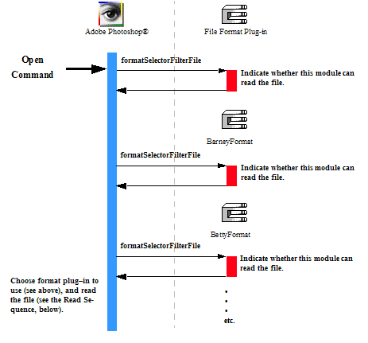
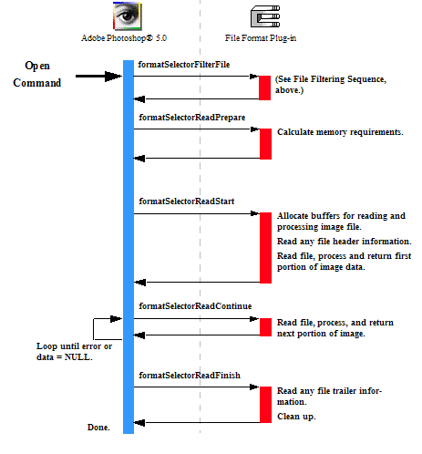
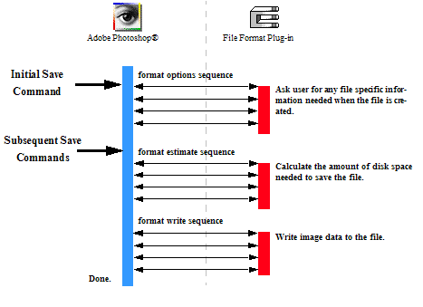
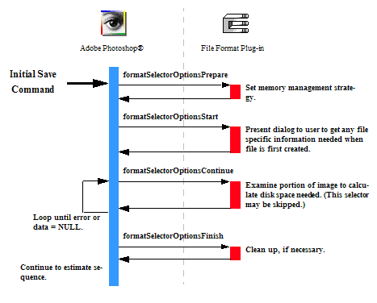
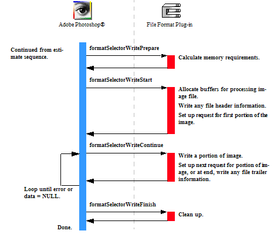

|
|
Adobe Photoshop SDK |
Getting Started
SDK API ReferenceSDK API Features
Other Documentation |
Writing Format Plug-ins
Format plug-in modules, sometimes referred to as Image Format, or File Format modules, are used to add new file types to the Open, Save, and Save As commands.Adobe Photoshop ships with several file format modules including GIF, MacPaint, and BMP.
Import and Export modules may also be used to read and write files. You should create a Format module if you want your users to treat your files in the same fashion as native Photoshop files. Use a Format module if:
- You want users to be able to create, modify, save, and reopen files in your format. If your format uses a lossy compression algorithm, you may want to consider image degradation issues for this situation.
- You want users to be able to double-click a document to launch Photoshop or associate your file extension with the Photoshop application.
You may not want to use a Format module if:
- With respect to Photoshop, your file format is read-only or write-only.
- The image compression and/or color space conversion on multiple reading and writing would result in unacceptable image degradation.
For descriptions of the sample Format plug-ins provided with the SDK, see Format Samples.
Format Module Operations
File Format plug-in modules have two main functions: reading an image from a file, and writing an image to a file.Reading a file is a two step process:
- The file filtering sequence is used to determine whether a Format module can read a particular file. This selector is called when the user performs an Open command.
- The read sequence is used to read image files.
Writing a file consists of three sequences:
- The options sequence is used to request save options from the user. It is only used when first saving a document in a particular format.
- The estimate sequence estimates the file size so that the host can decide whether there is enough disk space available.
- The write sequence actually writes the file.
- Note:
- Your plug-in should validate the contents of its globals and parameters whenever it starts processing if there is a danger of it crashing from bad parameters.
Format Modules and Scripting
The scripting system passes its parameters at every selector call. While it is possible to use the scripting system to store all your parameters, for backwards compatibility, it is recommended you track your parameters with your own globals. Once your globals are initialized, you should read your scripting-passed parameters and override your globals with them.
- First call a ValidateMyParameters routine to validate (and initialize if necessary) your global parameters.
- Then call a ReadScriptingParameters routine to read the scripting parameters and then write them to your global structure.
This way, the scripting system overrides your parameters, but you can use the initial values if the scripting system is unavailable or has parameter errors, and you can use your globals to pass between your functions.
See the individual selector descriptions in Format Module for details on scripting within the selector invocations.
File Filtering Sequence
When the user selects a file with the Open command from the file menu, there may be one or more Format modules that list the Mac OS file type or Windows file extension as a supported format. For each such plug-in module, Photoshop calls the plug-in with formatSelectorFilterFile. The plug-in module should then examine the file to determine whether the file is one that it can process, and indicate this in its result parameter:if (module can read this file) *result = noErr; else *result = formatCannotRead;
- The module with the first PICategoryProperty string (sorted alphabetically) is used. Modules with no
PICategoryPropertywill default to their PINameProperty for this comparison. - If two or more modules have matching category names, the module with the highest PIPriorityProperty value is used.
- If two or more modules have matching category and priority, the module that is selected is undefined.

Format Read Sequence
If the plug-in module returnsnoErr from the formatSelectorFilterFile call, the remainder of the read sequence is called. This sequence of actions is shown in the following diagram. The selectors are discussed in more detail in Format Module.

Writing a File
Writing a file involves either two or three distinct sequences, each similar in structure. The details of these sequences are shown below.When a document is first saved, Photoshop calls your Format plug-in in this order:
- the options sequence,
- the estimate sequence,
- the write sequence.
After a document has been saved once, each time the user saves the file again, the plug-in is called without the options sequence:
- the estimate sequence,
- the write sequence.
Error Handling when Writing in Format Plug-ins
When writing a file, if your plug-in module setsresult to any non-zero value, then no subsequent selector calls are made by Photoshop. For example, if the formatSelectorOptionsStart handler determines that the file cannot be saved, then none of the remaining selectors are called: options, estimate, nor write.

Write Options Sequence
When the user invokes a Format plug-in by selecting Save or Save As commands, Photoshop initially calls it with the options sequence of selector values shown in the figure below. After the document has been saved once, the options sequence is no longer invoked. The actions the Format plug-in needs to take for these selectors are discussed in more detail in Format Module.

Write Estimate Sequence
When the user invokes a Format plug-in by selecting Save or Save As commands, if the file has been saved before, Photoshop calls the plug-in with the estimate sequence of selector values shown in the figure below. The first time a document is saved, Photoshop invokes the options sequence, followed by the estimate sequence. The actions the Format plug-in needs to take for these selectors are discussed in more detail in Format Module.
- Note:
- The estimate sequence is not invoked if the plug-in returned a non-zero value in the
FormatRecord::resultfield returned from any of the options selectors.

Write Sequence
Once Photoshop has called the plug-in with the estimate sequence, it follows that with subsequent calls to the plug-in with the write sequence of selector values shown in the figure below. The actions the Format plug-in needs to take for these selectors are discussed in more detail in Format Module.
- Note:
- The write sequence is not invoked if the plug-in returned a non-zero value for the
resultreturned from any of the options or estimate selectors.
